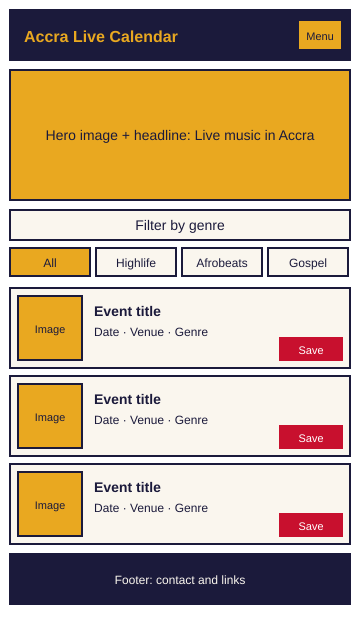
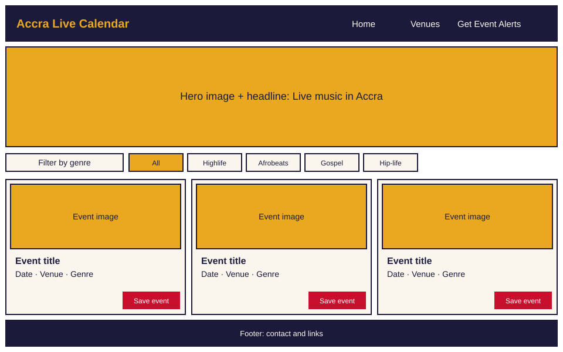

Site Name
Accra Live Calendar
The name says exactly what the site is: a calendar of live music in Accra. It is short, easy to remember, and uses words people already type into a search box when they want something to do tonight.
Site Purpose
- Show upcoming live music events in Accra in one place, with date, venue, genre and ticket price.
- Let visitors filter events by genre and venue so they find a show that fits their taste quickly.
- Introduce local venues with their location and the kinds of events they host.
- Offer a “Get Event Alerts” sign-up form so fans hear about new shows.
- Remember each visitor's favourite events on their own device using localStorage.
Target Audience
Music fans aged 18 to 40 living in or visiting Accra, mostly browsing on a phone. Secondary audiences are local bands looking for exposure and venue managers who want to promote their events.
Scenarios
- A student wants to find a free or low-cost highlife show this weekend. Can they filter by genre and see the price without opening several pages?
- A tourist has just landed in Accra and wants to know which venue near Osu has live music tonight. Can they find the venue, its location and the event time in under a minute?
- A regular concert-goer wants a reminder when an afrobeats artist plays again. Is the alert sign-up form short, clear and confirmed right after submitting?
- A venue manager wants to check how their events appear to fans. Is the venue page clear about what is on and how to get there?
Color Scheme
The palette takes its cues from the Ghanaian flag and stage lighting: a dark night background, warm gold highlights and a red accent for actions.
| Swatch | Name | Hex | Where it is used |
|---|---|---|---|
| Night Indigo | #1B1A3B | Header, footer, main headings and body text | |
| Kente Gold | #E9A820 | Highlights, active filter buttons, borders and links on dark backgrounds | |
| Stage Red | #C8102E | Buttons such as “Get Event Alerts” and “Save event” | |
| Paper | #FAF6EE | Page background and text on dark backgrounds |
Typography
- Bricolage Grotesque (bold, sans-serif fallback): site name, page headings and event titles.
- Nunito Sans (regular and bold, sans-serif fallback): body text, event details, navigation, form labels and buttons.
Site Structure
Files and folders use lowercase letters, no spaces, and hyphens only where needed.
wdd131/
project/
index.html (home: featured events, genre filter)
venues.html (venue list and details)
alerts.html (Get Event Alerts form)
confirmation.html (form confirmation message)
styles/
main.css
scripts/
events.js
alerts.js
images/
hero-mobile.webp
hero-large.webp
logo.svg
Wireframes
Both wireframes show the home page.

